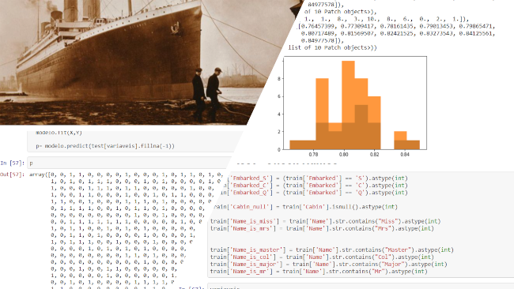
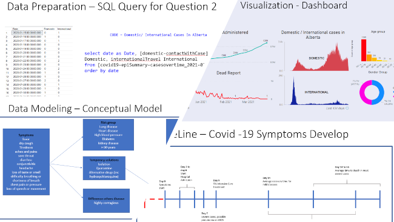

Flavio Akira Tikaishi Oliveira
Data Analyst | Data Scientist
I'm a Data Analyst student at SAIT Southern Alberta Institute of Technology and HR/IT Data Analyst Summer Student at Cervus Equipment. I strongly believe using data-driven we can help businesses to move forward and from ideas and the right questions around what you want to measure and how to capture data accurately, prepare data, analysis, and management, to a clean, organized, and understandable presentation.
Projects:
Titanic
This is the legendary Titanic ML competition from Kaggle, This project I used machine learning to predicts which passengers survived the Titanic shipwreck. My model had a 75% accurancy rate.
- Programming Language:
- Python
- Pandas
- Numpy
- Sklearn_ensemble
- sklearn_model_selection (train_test_split)
- sklearn_model_selection (KFold)
- sklearn_model_selection (RepeatedKFold)
- matplotlib_pylab

This Kaggle project is focused on the number of rooms, area, pool, extra... There are so many items to describe how we will evaluate the price of the house. Thinking about it, this project through machine learning evaluates the price of the houses.
- Programming Language:
- Python
- Pandas
- Numpy
- Seaborn
- sklearn_preprocessing(LabelEncoder)
- scipy_stats(skew)
- scipy_special(boxcox1p)
- scipy_stats(boxcox_normmax)
COVID-19 Pandemic in Alberta
Case study project trying to answer some specific business questions:
- Question 1) First day December 15, 2020. Can we see any change at cases/ deaths by Covid 19 in Alberta since the beginning of vaccine campaign?
- Question 2)How was the dissemination and propagation of the virus in Canada considering international and domestic cases?
Programming Language: